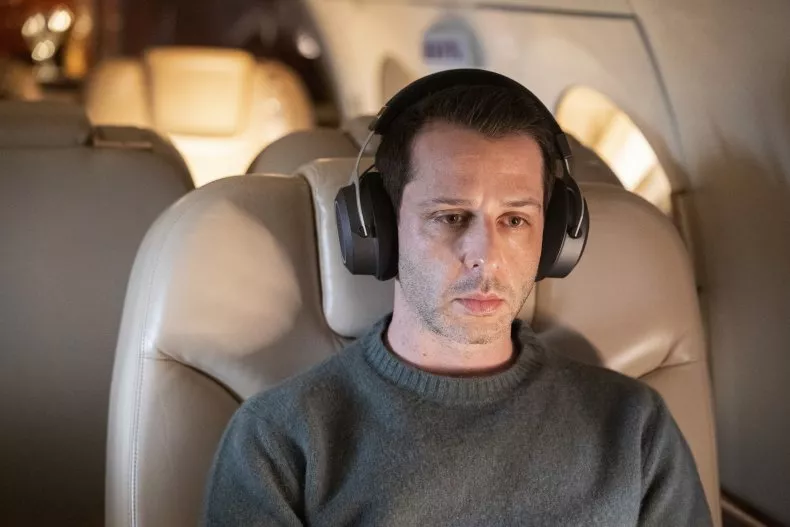
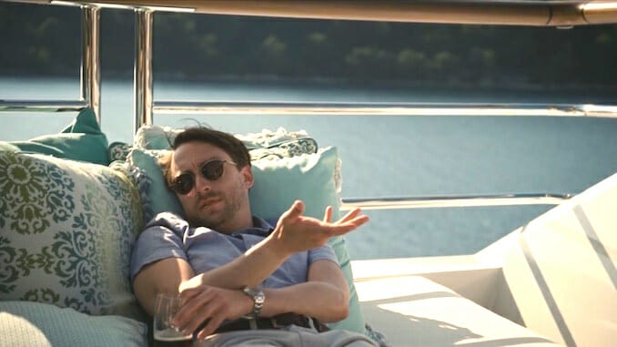

Logan Roy
El padre de la familia Roy, dueño del conglomerado mediático Waystar Royco.

Logan Roy interpretado por Brian Cox
Los personajes más importantes de la serie
El padre de la familia Roy, dueño del conglomerado mediático Waystar Royco.
Logan Roy interpretado por Brian Cox
El hijo mayor de Logan, quien lucha por el control de la empresa familiar.
Kendall Roy interpretado por Jeremy Strong
La única hija de Logan, quien busca su lugar en el mundo empresarial y político.
Shiv Roy interpretada por Sarah Snook
El hijo menor de Logan, conocido por su humor sarcástico y su falta de seriedad.
Roman Roy interpretado por Kieran Culkin